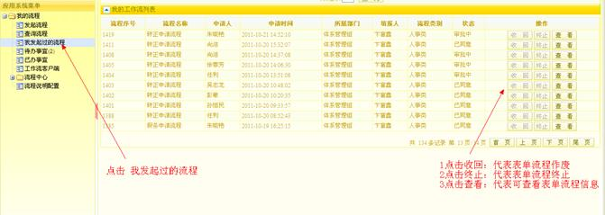
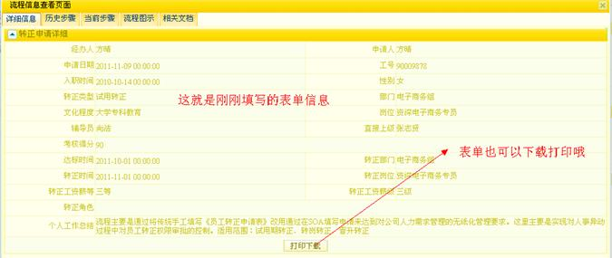

| 8.1.3 待办事宜 |
分类方式列出我待办的流程及待办的流程个数统计。界面如下：

待办事宜分类列表界面
点击流程名称，弹出待办事宜列表。

待办事宜列表界面
可以点击查看或办理操作。【查看】弹出通用流程查看界面，内容包括表单详细信息、历史步骤、当前步骤、流程图示、相关文档，见下图1。【办理】弹出通用流程处理界面，内容包括审批信息和通用流程查看信息，见下图2。
通用流程信息查看界面
通用流程处理界面
在通用流程处理界面，审批人可以进行【提交】和【回退】操作，【提交】操作意味着审批人同意此流程申请，【回退】操作意味着审批人不同意此流程申请。不管【提交】还是【回退】操作审批人都要填写审批意见。